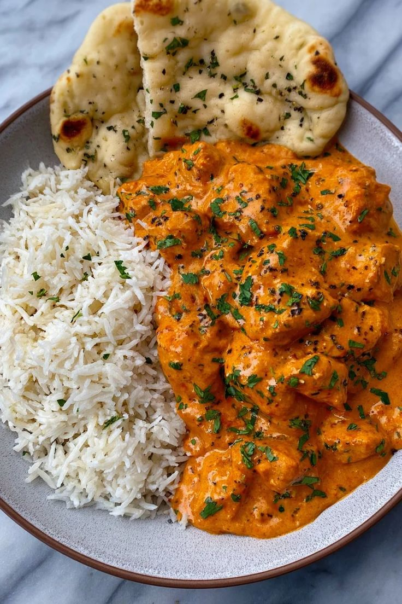
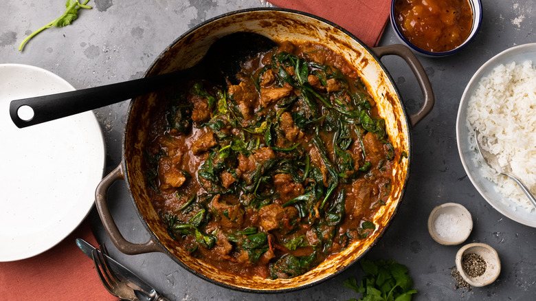
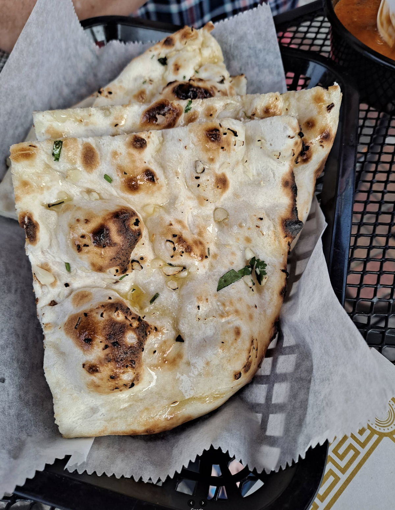
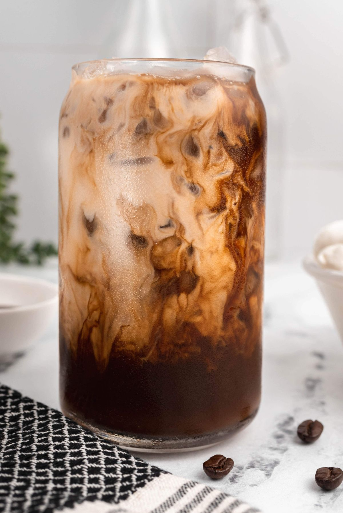
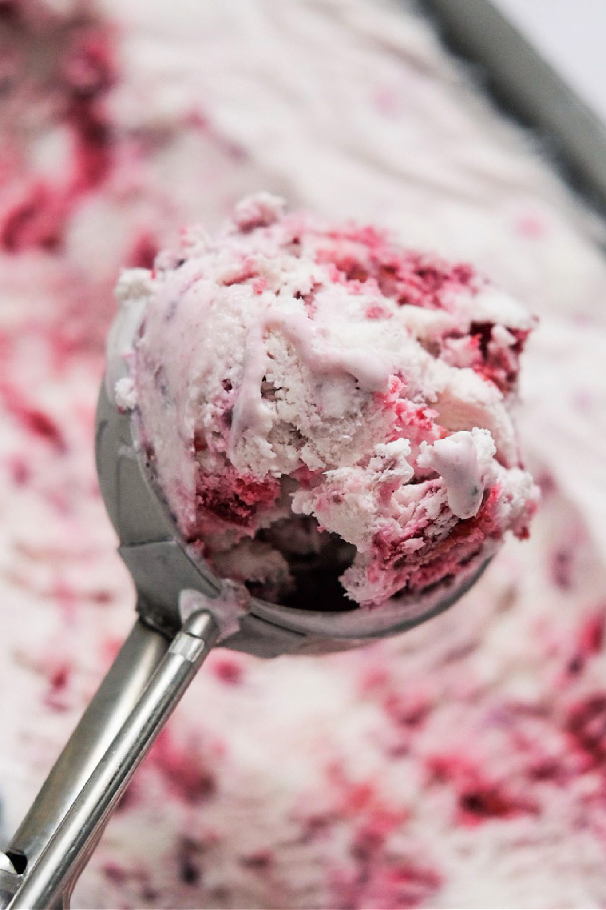
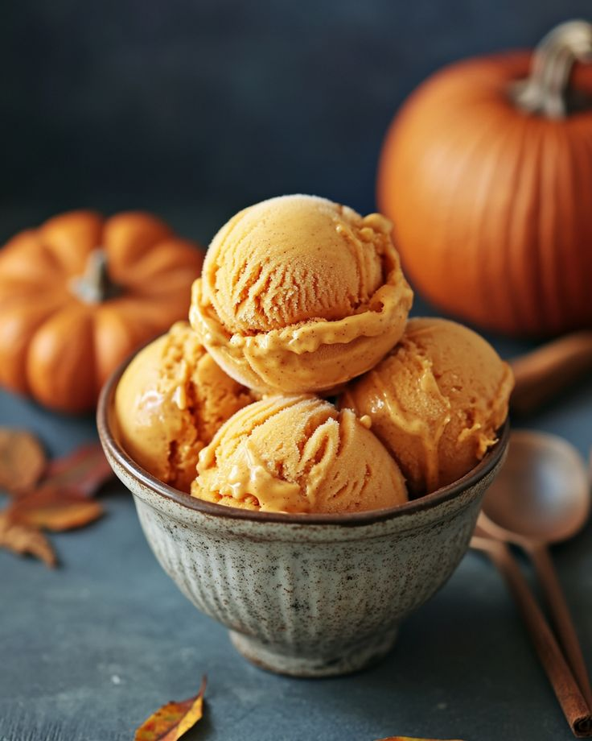
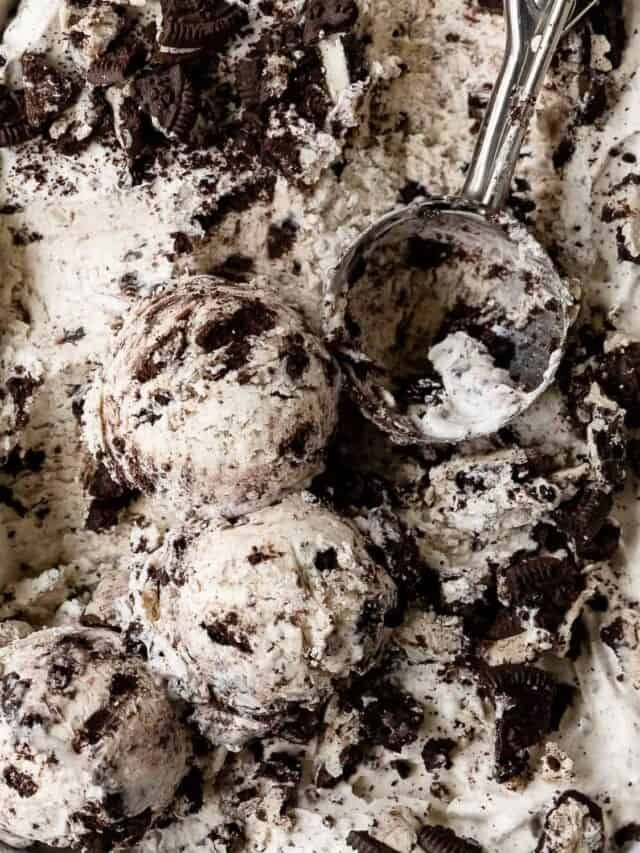

Now, now. There's so many places to choose from on campus.
I know you're thinking, "Man, I'm hungry. Where should I go?"
Luckily for you, this page has come to save you! These three
spots are my go-tos. In my semesters at UNCG, I've learned
through trial and error where to get the most bang for your
buck, or flavor for your fork, in culinary terms.
Scroll to checkout my recommendations, with the best dishes
to try off the menu.
RAAZ INDIAN
This Indian Restaurant is my favorite spot for a late-night
warm meal, especially during finals. They have a great menu of
hearty stews, with options for vegetarians. Plus: the naan is
to die for!
BUTTER CHICKEN

Image Credit:
WeArtSite
Butter chicken is a staple south asian dish. The dish
consists of chicken in a creamy, flavorful tomato sauce,
typically served with white rice.
LAMB SAAG

Image Credit:
Tasting Table
Lamb saag is a wonderful curry dish that uses spinach for
beautiful color, with lamb for delicious flavor in each bite.
Raaz Indian Kitchen has an amazing lamb saag that you can
trust is a repeat order for me.
GARLIC NAAN BREAD

Image Credit:
Paul Wentworth on Google Reviews
Does it need to be explained? Raaz's naan bread is my
favorite item on their menu, hands down. It's so decadent,
warm, and perfect for pairing with their curries. They offer
plain, garlic, and butter variations.
Tip: My favorite is the garlic naan. It's
sooooo good with the butter chicken.
Let's say you're not so hungry, but just craving that
caffeine hit? I've got the spot just for you. Not too crowded,
not too far, just in the right spot. Head to the corner of Highland
Ave and Gate City Blvd to find this spot.
33 & Elm
33 & Elm has adequate workspace for getting assignments
done without having to fight for a seat. Their weekly
specials and student discounts make the cafe experience
fun for both first timers and regulars. I highly recommend
this cafe to the caffeinated student population.
MAPLE LATTE
Image Credit:
HungerThirstPlay
Who doesn't love maple in a latte? It's such a
great flavor for the cold weather. And—it'll
definitely pair with all your fall outfits and
flannel shirts.
ORGANIC CHAI
Image Credit:
Healthy Food on Pinterest
Chai masala is one of those drinks you have that
can shift the path of your life going forward. And
that's putting it lightly. 33 & Elm has a wonderful
organic chai that is a warm blend of spices, black
tea, and goodness. It's so good, I order it with zero
flavor.
OAT MILK MOCHA

Image Credit:
MommyHatesCooking
Oat milk combines so well with coffee, adding a milky light-
ness without too much cream to dampen the taste of the beans.
This oat milk mocha has been my consistent order in this
warm weather.
Speaking of warm weather: you know what I love to do in the summer?
Sunbathe and indulge in ice cream!
Well, who says you can't have ice cream in the winter? This
recommendation goes for the calendar year.
Yum Yum Better Ice Cream
Yum Yum's is an iconic UNCG spot. It's a local ice cream business
with a long history, and the freaking-bomb ice cream to show it!
Yum Yum Better Ice Cream excels in both classic flavors, and some
interesting seasonal flavors that make every visit unique. If you
really like their stuff, they sell pints and gallons of the ice cream.
BLACK CHERRY

Image Credit:
Relunctant Entertainer
Black cherry is a great fruity option for ice cream on a hot
day. I love the subtle bitter ness of the cherry, while still
being decadently sweet. If you're looking for a lighter, classic
flavor, this is my rec!
PUMPKIN

Image Credit:
Flavor Smiles on Pinterest
If you're looking for an autumnal flavor that will taste like
October in a cone, pumpkin is for you! Yum Yum Better Ice
Cream has a great pumpkin flavor that maintains the richness
of pumpkin without overpowering the dairy. 10/10!!
OREO

Image Credit:
OlivesNThyme
Oreo ice cream is a flavor that everyone likes; well, unless
you don't like oreo. Regardless, Yum Yum's oreo is delicious,
with enough crunch, and (unlike the competition) contains adequate oreo to be
oreo ice cream!